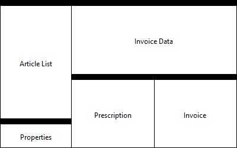
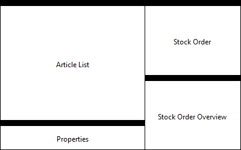
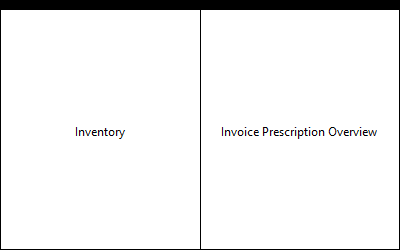
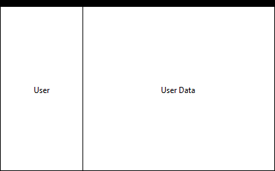

Application Documentation - Pharmacy Austria
Document created on Montag, Mai 12, 2014, 03:35:08 PM (MESZ)
Introduction
Pharmacy AT is an application that allows to manage a strongly limited set of aspects of an Austrian Pharmacy. Its main purporse is, to act as a sample application for the development of the Ecrit User Manual creation project.
The application provides an interface for 4 different kinds of users:
- Seller the person selling articles to customers
- Stockist responsible for managing the stock and the respective orders
- Clerk responsible for accounting and balance of the pharmacy
- Admin responsible for defining access rights within the application
Conventions used in this documentation
Concept of operations
Software installation and uninstallation
For more details about the installation of Pharmacy_AT see ecrit/pharmacy_at
Orientation to use the features of the graphical user interface
Navigation through the software to access and to exit from functions
The application has one main window presented to the user on startup.
PharmAT Main Menus
PharmAT Toolbar
Perspectives
There are 4 perspectives available to the user.
Switch Perspectives
The perspectives are separated into the tabs:In order to switch perspectives simple click on the wanted tab.
Keep in mind: You can only access tabs available for your user role.
Perspective Seller

Description This perspective contains all the parts needed to perform a sellers daily routine.
On the lefthand side the basic information about the articles (ArticleList, Properties) is shown.
On the righthand side the invoice specific details are visible. On the right top (InvoiceData)the invoice can be created.
Below that, the prescriptions related to the current invoice above are displayed (Prescription). They can be changed from there as well.
On the far right bottom the preview of the printed invoice is shown (Invoice). This gives an overview of the actually payed and refunded
(by prescriptions) articles.
Perspective Stockist

Description This perspective contains all the necessary part to perform a stockists daily routine.
On the lefthand side there is some basic information about the available articles and their further description (same as in the sellers part).
On the righthand side the stockist can create and place a new order. On the right bottom an overview of all StockOrders is given.
Perspective Clerk

Description This is the clerk specific perspective. It supports the clerk in his/her usual business.
Perspective Admin

Description This perspective supports the administrator of this product in different system managing activities.
Parts
Part Article List
Description
In this part you see the various articles.
The displayed table gives an overview about the units (per article) on stock and if there is currently an order existent. By right click the Popup Menu will open and the various commands are visible.
The box in the ordered column gives information about whether the article is ordered or not and if – which state it is in.
- grey box: normal state, enough units on stock
- green box: article is ordered (though can be out of stock)
- yellow box: not ordered, but lower bound on stock is already reached
- red box: not ordered and no more articles on stock
Executable tasks
Menus
-
Popupmenu-ArticleList
This menu will pop up when right clicking on the article list table.
Part Properties
Description Displays a description on the currently selected article of the ArticleList .
Executable tasks
Menus
- No part specific menus defined.
Part Invoice Data
Description Here the articles to be sold are collected during the purchase by a customer. The seller selects an article in the ArticleList to be included in this part by either double-clicking on it or drag&drop it to this part.
The selling process will be completed and stored by pressing the Cash up button.
In case you’d like to revert the selling procedur press the Cancel Cash up button.
Executable tasks
Menus
-
It will pop up via right click inside the invoice data table.
-
This is the invoice data’s view menu.
Part Prescription
Description In this part all the prescriptions connected to the current invoice are displayed.
By the Executable tasks can be called by double clicking or calling the popup menu.
Executable tasks
Menus
-
Right click anywhere in the prescription table to make this menu pop up.
Part Invoice
Description
This part gives an overview of the final invoice. Including:
- article(s) to sell
- prescriptions to those articles
- total costs
Executable tasks
Menus
- No part specific menus defined.
Part Stock Order
Description This part offers the functionality to create a new stock order.
Articles can be added via drag&drop from the ArticleList part.
Or calling the popup menu there and selecting the whished command.
Moreover this part offers the ability to adapt the various articles units, the issuing enterprise and finally complete and place an order by pressing PlaceOrder .
Executable tasks
Menus
- No part specific menus defined.
Part Stock Order Overview
Description This part will give you an overview about the StockOrders.
With the help of the search field you can search for a specific order.
To change the orders status simply click in the appropriate status cell and select the desired order status and press enter.
Executable tasks
Menus
Part Inventory
Description This part gives an overview of the entire inventory and supports the clerk in evaluating the inventory.
Executable tasks
Menus
-
This popup opens right clicking in the inventory.
Part Invoice Prescription Overview
Description This part shows all the saved invoices and relating prescriptions.
By applying the date filters only the invoices (and prescriptions) in between the selected timespan will be shown.
Executable tasks
Menus
-
Right click in a table to call this menu.
Part User
Description This part is used to display user relevant information.
Executable tasks
Menus
- No part specific menus defined.
Part User Data
Description The UserData part shows further information about the users.
Executable tasks
Menus
- No part specific menus defined.
Procedures
Not available. Requires "cheat-sheets".
Information on software commands
Add as Prescription
Description By this command the selected article can be added to the invoice as prescripted article.
Whenever it’s called a PrescriptionDialog will automatically apear on your screen and
ask you for more details about the prescription (number, issuing practitioner).
This command can be used as well via drag&drop from the ArticleList to the Prescription part.
Requirements
- logged in as seller.
- select the article you’d like to prescribe on the ArticleList part
Executable by
Completion information
Add to Prescription
Description Use this command to add an article to an existing prescription.
It can be either executed by selecting AddToPrescription in the popup menu or by drag&drop to the prescription you’d like to add the article to.
Requirements
- logged in as a seller.
- a selection on the ArticleList
- an existing prescription
Executable by
Completion information Besides the prescription, the article will be added to the invoice with an apropriate refund entry.
Edit Prescription
Description Allows you to edit the selected prescriptions details in a Dialog.
Requirements
- logged in as seller
- a prescription selection
Executable by
Completion information The prescription will be up to date (in case you confirmed your changes).
Delete Prescription
Description The selected prescription will be deleted. Attention: Cannot be undone!
Requirements
- logged in as seller.
- the prescription you’d like to delete needs to be selected.
Executable by
Completion information The selected prescription is no longer existent.
Add to Invoice
Description Add an article from the available article list ( ArticleList Part ) to the current invoice ( InvoiceData ).
By adding it, the amount the customer is required to pay will automatically increase.
Requirements
Executable by
Completion information The article(s) selected are now part of the invoice.
Delete from Invoice
Description Delete mistakenly added articles from current invoice.
Requirements
Executable by
Completion information
Cancel Invoice
Description Run this in case you’d like to go back and start over with an empty invoice.
This command reverts all changes made to the current invoice (incl. prescriptions).
Requirements
Executable by
Completion information
You can start over with fresh and empty cleaned up parts of,
Add to StockOrder
Description The stockist can filter for articles with critical amount on stock by pressing the OnylCritical button.
Next this command can be called or indirectyl executed via drag&drop from the ArticleList to the StockOrders table.
Placed on the table, the quantities to oder can be set and in the issuing enterpris field the pharmaceutical enterprise the order is aimed for can be inserted.
Requirements
- logged in as stockist
- the article you’d like to order needs to be selected
Executable by
Completion information When all the needed articles are placed on the stock order, the order creating process can be completed by pressing PlaceOrder.
Order Articles
Description This command can be used to send the completed stock order to the appropriate authority.
Requirements
- logged in as stockist
- a stock order form with filled in issuing enterprise and articles to order
Executable by
Completion information The order will be displayed in the StockOrderOverview part with it’s ordering status.
Add new Article
Description To add a new article simple select the Add new Article menu from the popup menu in the ArticleList part. A dialog will show up and ask you to fill out some basic and required information to the article:
- name
- admissionNumber
- price
- description
- units:
- number on stock
- lower bound (if this bound is reached try to re-order as soon as possible)
- number ordered (in case there are already some units ordered)
Once filled out, confirm and add the article by pressing Save.
Requirements
Executable by
Completion information A new article is now part of the system.
Delete from Stock
Description You can delete an article from the stock by selecting it in the AricleList part, right clicking and executing teh Delete from Stock menu.
A dialog will pop up and ask you to confirm the deletion. Attention: Once you confirm it the article will be deleted.
Requirements
- logged in as stockist
- the article you’d like to delete is selected
Executable by
Completion information The previously selected article was removed from the system.
Edit StockArticle
Description Calling this command a StockArticleDialog that allows you to edit the articles details will pop up.
Changes will be applied if you confirm with Save and discarded otherwise.
Requirements
- logged in as stockist
- a selection of a stock article
Executable by
Completion information The adapted article should now contain all the updated information.
Edit StockOrder Status
Description In the StockOrderOverview part the stockist can select the received/refilled order from the table.
Next it’s status can be cahnged (i.e. from ORDERED to RECEIVED) and applied by pressing the ENTER key on your keyboard.
Requirements
- logged in as stockist
- a stock order that needs a status update
Executable by
Completion information The stock orders status is updated.
In case the status was set to RECEIVED all the articles that have been ordered by this specific order get a update (the corresponding articles number on stock will be updated and the order status changed).
Check Inventory
Description
Let’s focus the Inventory part.
The clerk compares the determined inventory numbers with the actual numbers in the system and,
- checks all the articles that are consistent
- does NOT check the inconsitent articles
Once all the articles are compared the clerk presses the FinishInventory button.
- The inventory resulted in any inconsistencies
- The clerk will be asked if a report should be created about it
- The inventory is consistent
- A success message will appear and you can continue with your daily routine.
Requirements
- logged in as clerk
- a print-out of the current articles on stock
- with manually filled out quantities
Executable by
Completion information Any discrepancies of the inventory should be documented.
Delete User
Description
Once you selected the user to delete, press the Delete button. A dialog to confirm the deleting process will appear on your screen.
- Confirm Attention: The user will be finally deleted from the system!
- Press Cancle and the user will remain on the system
Requirements
- logged in as admin
- focus the user you’d like to delete.
Executable by
Completion information If confirmed, the user is no longer part of the system.
Update ArticleList
Description Execute this command by selecting Stock Management/Update articles in the menu bar.
Navigate to the catalogue files location in the poping up FileDialog (i.e. C:\Users\Pharmacy\article_cat.csv).
By pressing OK the system will automatically update your local article list.
Requirements
- logged in as stockist
- a new article catalogue in digital form
Executable by
Completion information
An up to date listing of all the available articles.
- new articles: added
- no longer available articles
- not on stock: deleted
- on stock: status is set to Black
Create Report
Description This command helps the user to document any system or human error or mistake.
Select Report/Report Issue in the menubar.
A ReportDialog will open and provide you some fields to specify your concern:
- title
- issuer (you)
- priority (low, medium, high)
- cause
- what it’s concerning (invoice, order,...)
- textual problem description
Once you’re finished press FinishReport and it will be save.
Requirements
Executable by
Completion information A report is added to the report list. Reports can be examined and used to improve the system and the staffs daily routine.
Save User Data
Description In the user data fields details about the user get displayed.
Simply apply the necessary changes and press the Save button and the userdata will be overwritten.
Requirements
- logged in as admin
- focus the user you’d like to change
Executable by
Completion information Updated user data information.
Description Let’s focus the InvoicePrescriptionOverview .
On the right bottom there is the Print Refund Form button.
Before you push the button be aware of the fact: Only selected articles/prescriptios from the overview will be printed to the refund PDF file.
Once you pressed the button a FileDialog will ask you for a location to save the PDF file to. Navigate to the desired location and press OK to complete.
Requirements
- logged in as clerk
- optional: slect a timespan (from-to) and confirm it, so only invoices/prescriptions inside this timespan are being displayed.
Executable by
Completion information A PDF refund form was created. The only thing left to do is send it to the appropriate authority.
Print Inventory
Description
This command offers a plain inventory form.
It writes the entire inventory to a PDF but leaves out the number on stock. At this place there are empty fields that can be filled out by the staff.
| On Stock | Article Name |
|---|
| - | Aspirin |
| - | MexaVit C |
Requirements
Executable by
Completion information A quick and easy printout of the entire inventory
Print Invoice
Description In order to print an invoice press the CashUp button in the sellers tab.
A FileDialog will open up and ask you to navigate to the location you’d like to save the file.
Once you confirm it a PDF file will be created.
Requirements
- logged in as seller
- a non-empty invoice
Executable by
Completion information The articles that were just sold and prescribed are put together and written to the PDF file.
Error messages and problem resolution
Requires extension of the application model
Glossary
Requires deeper connection to the EMF data model
Related information sources
Navigational features
Index